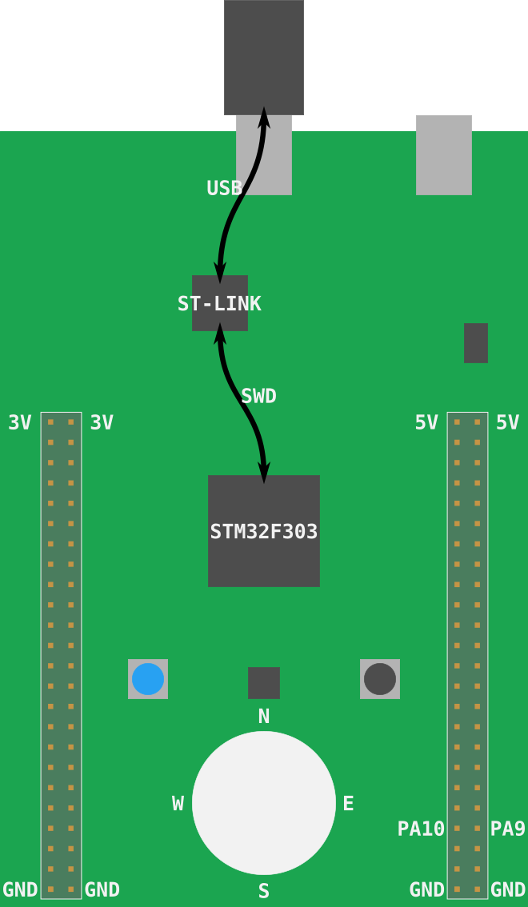

Flashへの書き込み
Flashへの書き込みとは、マイクロコントローラの（永続）メモリにプログラムを移動するプロセスのことです。 一度、Flashへ書き込むと、マイクロコントローラは、電源が入るたびに書き込まれたプログラムを実行します。
今回の場合、led-rouletteプログラムが、マイクロコントローラのメモリ内にある唯一のプログラムになります。
これは、マイクロコントローラ上で他には何も実行されないことを意味します。OSも「デーモン」もありません。
led-rouletteは、デバイスを完全に制御できます。
実際にFlashへ書き込みましょう。まず始めに、OpenOCDを起動する必要が有ります。これは、前のセクションで行いました。
しかし、今回はこのコマンドを一時ディレクトリ（*nixでは/tmp、Windowsでは%TEMP%）の中で実行します。
F3がノートPCに接続されていることを確認し、新しい端末で次のコマンドを実行して下さい。
$ # *nix
$ cd /tmp
$ # Windows
$ cd %TEMP%
$ # Windowsでは、追加で`-s %PATH_TO_OPENOCD%\share\scripts`が必要なことを思い出して下さい。
$ openocd \
-f interface/stlink-v2-1.cfg \
-f target/stm32f3x.cfg
注記 ボードが古いリビジョンの場合、
openocdに若干異なる引数を渡す必要があります。 詳細はこのセクションを見返して下さい。
このプログラムは端末をブロックします。端末を開いたままにしておいて下さい。
さて、このコマンドが実際に何をやっているのか、説明するのに良いタイミングです。
F3が実際には2つのマイクロコントローラを搭載していると述べました。1つはプログラマ/デバッガとして使用されます。 プログラマとして使用されるボードの一部をST-LINKと呼びます（STマイクロエレクトロニクスがそう呼ぶと決めたからです）。 ST-LINKは、Serial Wire Debug (SWD) インタフェースを使ってターゲットのマイクロコントローラと接続されます （SWDインタフェースはARMの標準なので、他のCortex-Mベースのマイクロコントローラを扱う時でも使うでしょう）。 SWDインタフェースは、マイクロコントローラのFlashに書き込み、デバッグするために使用されます。 ST-LINKは「USB ST-LINK」ポートに接続されています。そのため、F3をノートPCに接続した時に、USBデバイスとして現れます。

OpenOCDについては、SWDやJTAGのようなデバッグプロトコルを公開するUSBデバイスに、GDBサーバーのようなサービスを提供するソフトウェアです。
実際のコマンドで、.cfgファイルは、OpenOCDにST-LINK USBデバイスを探させて（interface/stlink-v2-1.cfg）、
STM32F3XXマイクロコントローラがST-LINKに接続されているのを求めています(target/stm32f3x.cfg)。
OpenOCDの出力は次のようになります。
Open On-Chip Debugger 0.9.0 (2016-04-27-23:18)
Licensed under GNU GPL v2
For bug reports, read
http://openocd.org/doc/doxygen/bugs.html
Info : auto-selecting first available session transport "hla_swd". To override use 'transport select <transport>'.
adapter speed: 1000 kHz
adapter_nsrst_delay: 100
Info : The selected transport took over low-level target control. The results might differ compared to plain JTAG/SWD
none separate
Info : Unable to match requested speed 1000 kHz, using 950 kHz
Info : Unable to match requested speed 1000 kHz, using 950 kHz
Info : clock speed 950 kHz
Info : STLINK v2 JTAG v27 API v2 SWIM v15 VID 0x0483 PID 0x374B
Info : using stlink api v2
Info : Target voltage: 2.919073
Info : stm32f3x.cpu: hardware has 6 breakpoints, 4 watchpoints
「6 breakpoints, 4 watchpoints」の部分は、プロセッサで利用可能なデバッグ機能を示しています。
OpenOCDはGDBサーバーの機能を提供すると言いました。それでは、早速接続してみましょう。
$ <gdb> -q target/thumbv7em-none-eabihf/debug/led-roulette
Reading symbols from target/thumbv7em-none-eabihf/debug/led-roulette...done.
(gdb)
注記 <gdb>は、ARMバイナリをデバッグできるGDBプログラムを意味しています。
これは、arm-none-eabi-gdbかgdb-multiarchかgdbです。
あなたのシステムに依存しているため、3つ全てを試してみる必要があるでしょう。
まだGDBシェルを開いただけです。OpenOCDのGDBサーバーに実際に接続するためには、GDBシェル内で次のコマンドを実行します。
(gdb) target remote :3333
Remote debugging using :3333
0x00000000 in ?? ()
デフォルトでは、OpenOCDのGDBサーバーは3333番のTCPポート（localhost）で待ち受けています。 上記コマンドはこのポートへと接続します。
上記コマンドを実行した後、次のような出力が、OpenOCDの端末に現れるでしょう。
Info : stm32f3x.cpu: hardware has 6 breakpoints, 4 watchpoints
+Info : accepting 'gdb' connection on tcp/3333
+Info : device id = 0x10036422
+Info : flash size = 256kbytes
もう一歩です。デバイスのFlashに書き込むには、loadコマンドをGDBシェル内で使います。
(gdb) load
Loading section .vector_table, size 0x188 lma 0x8000000
Loading section .text, size 0x38a lma 0x8000188
Loading section .rodata, size 0x8 lma 0x8000514
Start address 0x8000188, load size 1306
Transfer rate: 6 KB/sec, 435 bytes/write.
これで終わりです。OpenOCDの端末に新しい出力が見られるでしょう。
Info : flash size = 256kbytes
+Info : Unable to match requested speed 1000 kHz, using 950 kHz
+Info : Unable to match requested speed 1000 kHz, using 950 kHz
+adapter speed: 950 kHz
+target state: halted
+target halted due to debug-request, current mode: Thread
+xPSR: 0x01000000 pc: 0x08000194 msp: 0x2000a000
+Info : Unable to match requested speed 8000 kHz, using 4000 kHz
+Info : Unable to match requested speed 8000 kHz, using 4000 kHz
+adapter speed: 4000 kHz
+target state: halted
+target halted due to breakpoint, current mode: Thread
+xPSR: 0x61000000 pc: 0x2000003a msp: 0x2000a000
+Info : Unable to match requested speed 1000 kHz, using 950 kHz
+Info : Unable to match requested speed 1000 kHz, using 950 kHz
+adapter speed: 950 kHz
+target state: halted
+target halted due to debug-request, current mode: Thread
+xPSR: 0x01000000 pc: 0x08000194 msp: 0x2000a000
プログラムはロードされました。デバッグしてみましょう！